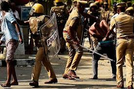

Kerala's Lawless Law Keepers: The Truth They Hide.

Dear readers,
Don’t trust the "Janamaitri" slogan if you can avoid it.
Seriously, look past the PR.
We all love to boast that Kerala has the best, most progressive police force in India. Their official advertisements claim: *"Every single life is precious to us, your protection is our responsibility."* [00:00:00]
But scratch beneath the polished public relations, and you'll find a primitive system plagued by absolute unprofessionalism, systemic corruption, and a terrifying criminal mentality [00:00:51]. When a video went viral showing a cop getting slapped at a mall, the comment section wasn't filled with sympathy. People openly rejoiced [00:00:10], writing things like, *"He deserved it."* [00:00:26] Why does society celebrate when a cop gets hit? Because deep down, citizens are absolutely terrified of the people meant to protect them [00:10:20].
Brutality by Design.
They claim to maintain law and order, but the system is engineered to protect its own, crush dissent, and hide the truth. Consider what happened to 26-year-old S.R. Sreejith in Varapuzha. Plainclothes officers dragged him away from his home in a classic case of mistaken identity [00:01:10]. He shared a name with a suspect [00:01:36].
What followed was pure horror. Sreejith suffered 20 distinct injuries, including a fatal blunt-force blow to his abdomen that perforated his small intestine. The response from the system? A masterclass in institutional cover-ups. The local DYSP actively tried to frame Sreejith’s agonizing death as a "suicide" [00:02:04]. The perpetrators received a brief suspension, only to be quietly reinstated back into the force just eight months later [00:01:54]. Years later, the trial hasn’t even properly commenced in court [00:02:04].
This is not a story of "a few bad apples." Between 2016 and 2024, Kerala recorded 16 horrifying lock-up deaths [00:17:49]. Look at 19-year-old Vinayakan in 2017—tortured, dead, labeled a suicide by police until the autopsy exposed the truth [00:17:53]. Look at Rajkumar in 2019, tortured for four straight days [00:18:29]. Look at Shameer in 2020, whose body bore over 40 severe injuries [00:18:51]. In every single case, the perpetrators were temporarily suspended, shielded by internal mechanisms, and quietly welcomed back to work [00:18:00].
The Toolkit of Deception: How the Truth is Fabricated
- The "Obstructing Official Duty" Clause: The ultimate legal weapon. If a cop assaults you and you attempt to defend yourself, question them, or even document it, they instantly slap a fabricated case of "obstructing official duty" or a false assault charge against you [00:11:52]. There is literal video evidence of a senior officer openly instructing a female subordinate to falsify a file, adding that a victim "grabbed the officer's uniform" just to justify a brutal police-station thrashing [00:14:03].
- The "Brotherhood" Shield: An unwritten code where police officers systematically protect each other. Internal investigations are intentionally botched, evidence is conveniently "lost," and officers strictly refuse to testify against colleagues [00:12:01].
- Weaponizing the RTI: When a victim named Sujith tried to access vital station CCTV footage of his brutal assault in Kunnamkulam, the police stubbornly defied Right to Information requests. It took an arduous two-and-a-half-year battle through the RTI Commissioner just to secure the footage [00:02:23].
- Half-Cooked Reports: When forced by the Human Rights Commission to submit incident accounts, the department routinely leaves out officer names, ranks, and operational designations to ensure individual accountability remains completely impossible [00:04:10].
- DGP Circular Irony: Following public outrage over exposed CCTV footage showing station violence, the DGP issued an official circular. The subtext? It didn't explicitly demand cops stop thrashing citizens; it warned them to *be careful* because active cameras were watching [00:16:18].
Deep-Rooted Political Corruption
How does a police force act with such absolute impunity? The answer lies in the murky intersection of state politics and police administration. The ruling political apparatus treats the police force as an extension of its party muscle [00:16:56]. Cops are regularly deployed to violently crush opposition protests or execute politically motivated agendas.
The politicization has corrupted the very entry point of the force. We have witnessed jaw-dropping scandals where ruling-party cadres systematically rigged police recruitment exams. SFI activists famously captured top ranks in the official PSC police exams through sophisticated, premeditated cheating and leaked question papers [00:17:35]. When political allegiance replaces merit, you don't get professional officers; you get party loyalists wearing badges.
Even the Police Association itself has shed all pretenses of neutrality. In recent meetings, they brazenly altered their official logo to solid red and attended conventions dressed uniformly in red shirts, closely mimicking a communist party rally rather than a disciplined, non-partisan state force [00:17:15].
Is the Government Capable of Fixing It?
The short answer is they simply choose not to. Ironically, Kerala's top political leaders, including Chief Minister Pinarayi Vijayan and Minister P. Rajeev, were themselves brutalized by police forces during historical movements like the Emergency [00:18:59]. Yet, once elevated to supreme power, their empathy evaporates. During events like the Navakerala Sadas, the government openly praised and validated heavy-handed police actions against peaceful protesters [00:19:17].
According to official data brought to light in the assembly, a staggering 774 police officers in Kerala are active accused defendants in ongoing criminal proceedings [00:19:11]. Mathematically, at least 1 out of every 100 cops walking Kerala's streets today is a suspected criminal [00:19:20]. Yet the government coddles them. A cop who steals a few kilograms of mangoes gets instantly dismissed to save face [00:16:28], but officers who literally kick and beat innocent citizens to death in dark lockups are systematically protected and insulated from real consequences [00:16:37].
The institutional bodies meant to keep them in check are completely toothless. The State Police Complaints Authority has been reduced to a literal paper tiger. Led by a retired judge, it lacks any real prosecutorial power; it can only "recommend" disciplinary actions, which the police department routinely and comfortably throws into the trash [00:14:58]. By 2025, the authority couldn't even provide basic public data on whether any officer had ever actually been punished based on their findings [00:15:26].
We are living under a primitive colonial hangover [00:10:00]. While advanced international forces subject their officers to routine psychological evaluations [00:18:01] and mandatory body-cameras [00:18:18], Kerala's administration keeps the force blind, unmonitored, and aggressively hostile. Laws in Kerala have effectively split into two tiers: a harsh, unforgiving set of rules strictly designed to exploit ordinary citizens, and absolute immunity for the uniform.
Stop accepting the "Janamaitri" facade. True reform won't come from internal police circulars or political empty promises. It will only come when we collectively break our silence, aggressively document their abuses, and demand structural, independent accountability for the state's lawless law keepers.
For a deeper, visual breakdown of Kerala's systemic police corruption and abuse of power, watch this detailed investigative report on YouTube.